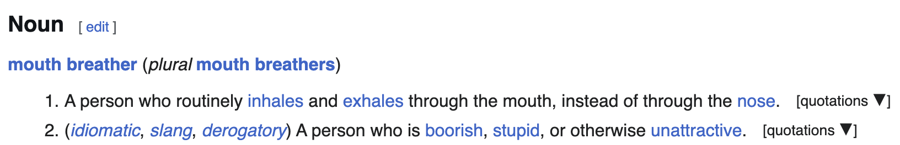

I facilitate breathwork sessions, for groups and 1:1! My breathwork group is called "MOUTHBREATHERS."
My priority in breathwork is for participants to feel the agency to deeply explore their own bodies, to create their own experience on their own terms, and to be playful and experiment with how they relate to their breath. My role is to create a safe container for that.
Therefore, my style is extremely non-coercive. I do not tell you how fast to breathe, how deeply to breathe, or even how to breathe. In spite of the name I chose, you can breathe through whichever orifice you want.
The style of breathing I teach is grounded and can be slow and gentle (or not), while also being potentially deeply intense (or not). I like to make space for people to get weird and somatic and release their atavistic animal energy (or not). My breathwork sessions are very experimental and a WIP!
I mostly facilitate in Berlin—if you're interested in joining a session, please reach out (Twitter DM, or email maeby @ this domain)!
I may also try Zoom sessions in the future, to see if I can translate my space-holding skills to video calls—you can also contact me if you're interested in remote breathwork.